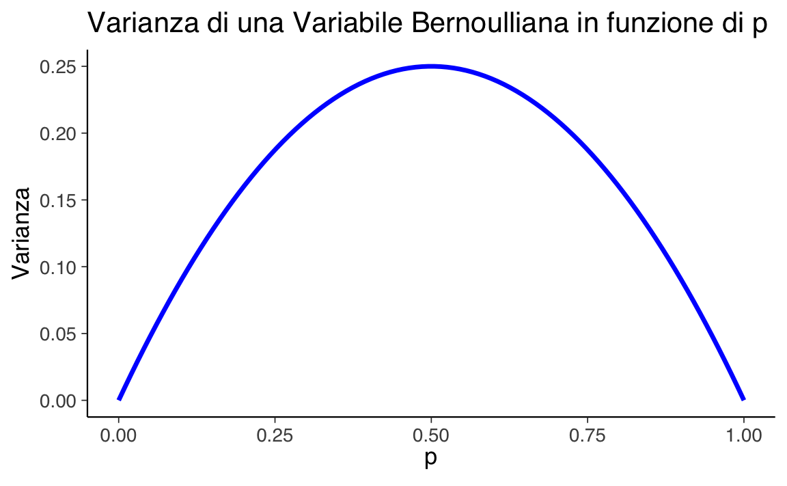
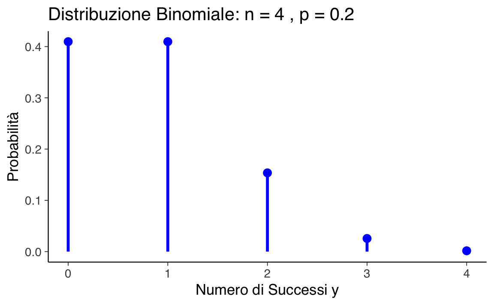
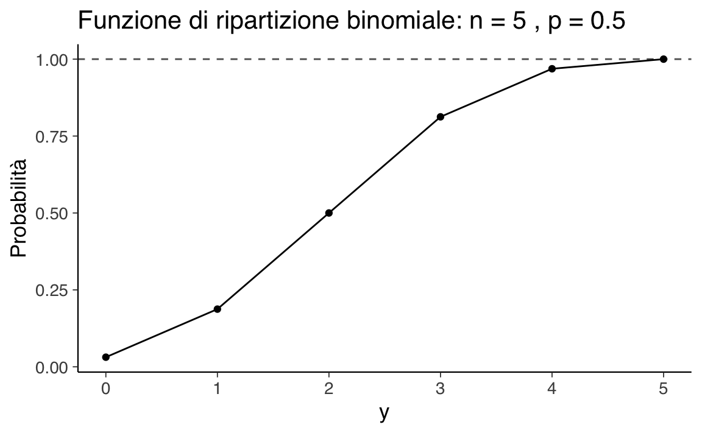
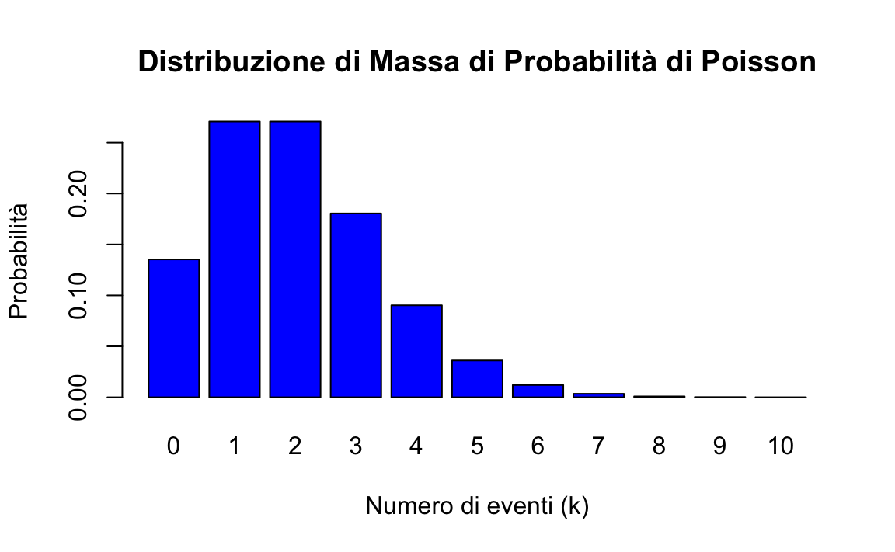
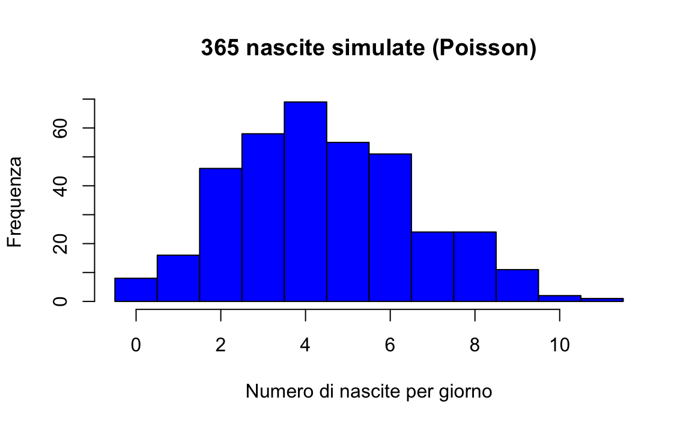
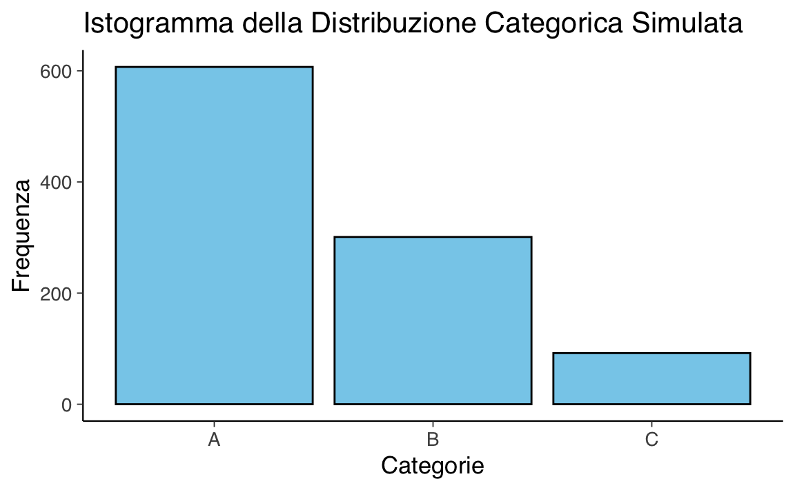

36 Distribuzioni di v.c. discrete
- …
- Leggere il capitolo Random variables and their distributions del testo di Blitzstein & Hwang (2019).
36.1 Introduzione
È importante distinguere tra variabili casuali discrete e continue, perché le distribuzioni di probabilità associate sono molto diverse nei due casi.
In questo capitolo ci focalizzeremo sulle distribuzioni di probabilità discrete, strumenti fondamentali per modellare fenomeni aleatori che generano un numero finito o numerabile di possibili esiti. Queste distribuzioni risultano particolarmente efficaci per descrivere eventi che si verificano in contesti discreti, come il numero di successi in un esperimento, l’occorrenza di un evento, o la selezione casuale da un insieme di opzioni finite. Di seguito, presentiamo una panoramica delle distribuzioni che verranno trattate.
- Distribuzione di Bernoulli
- Descrizione: Modella esperimenti con due soli possibili esiti, spesso denominati “successo†e “fallimento”.
- Applicazioni: Processi che coinvolgono eventi binari, come l’esito di una moneta lanciata o la risposta a una domanda dicotomica.
- Parametro: La probabilità di successo (\(p\)).
- Importanza: Costituisce la base teorica per molte altre distribuzioni discrete.
- Distribuzione Binomiale
- Descrizione: Descrive il numero totale di successi in un numero fisso di prove Bernoulliane indipendenti.
- Applicazioni: Esperimenti che coinvolgono ripetizioni di un processo binario, come il numero di voti favorevoli in un gruppo o il numero di sintomi in un campione di pazienti.
- Parametri: Probabilità di successo (\(p\)) e numero di prove (\(n\)).
- Importanza: Modella fenomeni ripetuti in condizioni identiche, fornendo una struttura per analisi probabilistiche più complesse.
- Distribuzione di Poisson
- Descrizione: Modella il numero di eventi che si verificano in un intervallo fisso di tempo o spazio, quando tali eventi sono rari e indipendenti.
- Applicazioni: Il numero di episodi di ansia acuta riportati da un individuo in un periodo di una settimana; il numero di interazioni sociali spontanee di un bambino con un disturbo dello spettro autistico durante una sessione di osservazione; la frequenza di lapsus verbali durante una presentazione pubblica; il numero di sogni vividi riportati durante una serie di notti consecutive in uno studio sul sonno.
- Parametro: Il tasso medio di eventi per unità di tempo o spazio (\(\lambda\)).
- Importanza: È cruciale per analizzare processi psicologici o comportamentali rari ma importanti, permettendo di comprendere i meccanismi sottostanti e di modellare la variabilità osservata in contesti clinici, sperimentali o quotidiani.
- Distribuzione Uniforme Discreta
- Descrizione: Ogni evento ha la stessa probabilità di verificarsi, all’interno di un intervallo discreto finito.
- Applicazioni: La scelta casuale di uno stimolo da una lista di parole equiprobabili in un esperimento di memoria; l’assegnazione casuale di partecipanti a gruppi sperimentali in uno studio di psicologia sociale. La selezione casuale di un’immagine tra un insieme di stimoli visivi utilizzati in una ricerca sull’attenzione; la probabilità uniforme che un partecipante scelga una delle opzioni in un questionario a risposte multiple quando non ha preferenze o conoscenze specifiche.
- Parametri: L’intervallo di supporto della distribuzione, ad esempio il numero totale di opzioni disponibili o di stimoli tra cui scegliere.
- Importanza: È utile come modello di riferimento in situazioni in cui si assume che i partecipanti non abbiano preferenze o che l’incertezza sia massima. Questo tipo di distribuzione aiuta a comprendere il comportamento casuale e a definire un punto di partenza per analisi più complesse.
36.2 Distribuzioni in R
In R, per ogni distribuzione sono disponibili quattro funzioni principali, i cui nomi iniziano con le lettere:
-
d (density): per calcolare i valori teorici relativi alla distribuzione,
-
p (probability): per ottenere la probabilità cumulativa,
-
q (quantile): per determinare i quantili,
- r (random): per generare campioni casuali.
Il pacchetto di base stats include numerose funzioni dedicate alle principali distribuzioni statistiche, permettendo di calcolare valori teorici e simulare dati in modo semplice e flessibile. Per ulteriori dettagli sulle distribuzioni disponibili e sull’uso delle relative funzioni, è possibile consultare la documentazione con il comando ?Distributions.
36.3 Distribuzione di Bernoulli
In statistica, un esperimento che ammette solo due esiti possibili è modellato attraverso quella che viene chiamata “prova Bernoulliana”. Un esempio tipico è il lancio di una moneta, che può dare come risultato testa o croce.
Definizione 36.1 Una variabile casuale \(X\) che assume valori in \(\{0, 1\}\) è detta variabile di Bernoulli. La sua distribuzione di probabilità è definita come:
\[ P(X \mid \theta) = \begin{cases} p & \text{se $X = 1$ (successo)}, \\ 1 - p & \text{se $X = 0$ (insuccesso)}, \end{cases} \]
dove \(0 \leq p \leq 1\). Il parametro \(p\) rappresenta la probabilità del “successo†(\(X = 1\)), mentre \(1 - p\) è la probabilità dell’“insuccesso†(\(X = 0\)).
La distribuzione di Bernoulli descrive quindi un contesto in cui la probabilità di osservare l’esito 1 è \(p\) e quella di osservare l’esito 0 è \(1 - p\). Viene utilizzata per modellare situazioni binarie, come una risposta “sì†o “no”, oppure un “successo†o “insuccesso”.
Calcolando il valore atteso e la varianza, otteniamo:
\[ \begin{align} \mathbb{E}(X) &= 0 \cdot P(X=0) + 1 \cdot P(X=1) = p, \\ \mathbb{V}(X) &= (0 - p)^2 \cdot P(X=0) + (1 - p)^2 \cdot P(X=1) = p(1-p). \end{align} \tag{36.1}\]
Esaminiamo la dimostrazione algebrica del calcolo della varianza.
Espandiamo il calcolo della somma, considerando i due possibili valori di \(X\) (0 e 1).
-
Primo termine (\(X = 0\)):
\[ (0 - \mathbb{E}(X))^2 \cdot P(X = 0) = (0 - p)^2 \cdot (1 - p). \]
Semplificando \((0 - p)^2 = p^2\), quindi:
\[ (0 - \mathbb{E}(X))^2 \cdot P(X = 0) = p^2 \cdot (1 - p). \]
-
Secondo termine (\(X = 1\)):
\[ (1 - \mathbb{E}(X))^2 \cdot P(X = 1) = (1 - p)^2 \cdot p. \]
Semplificando \((1 - p)^2 = 1 - 2p + p^2\), quindi:
\[ (1 - \mathbb{E}(X))^2 \cdot P(X = 1) = (1 - 2p + p^2) \cdot p = p - 2p^2 + p^3. \]
-
Somma dei termini
Ora sommiamo i due contributi:
\[ \mathbb{V}(X) = p^2 \cdot (1 - p) + (p - 2p^2 + p^3). \]
Espandendo il primo termine:
\[ p^2 \cdot (1 - p) = p^2 - p^3. \]
Somma completa:
\[ \mathbb{V}(X) = (p^2 - p^3) + (p - 2p^2 + p^3). \]
-
Raggruppiamo i termini
\[ \mathbb{V}(X) = p - p^2. \]
Risultato finale:
\[ \mathbb{V}(X) = p(1 - p). \]
In sintesi, la varianza di una variabile aleatoria binaria \(X\), distribuita secondo Bernoulli con parametro \(p\), è data da \(p(1-p)\).
Tale risultato mostra come la varianza massima si ottenga per \(p = 0.5\), condizione che corrisponde alla massima incertezza intrinseca nel processo, ossia quando la probabilità di successo eguaglia quella di insuccesso.
# Valori di p tra 0 e 1
p <- seq(0, 1, length.out = 100)
variance <- p * (1 - p)
data <- data.frame(p = p, Variance = variance)
# Creazione del grafico
ggplot(data, aes(x = p, y = Variance)) +
geom_line(color = "blue", linewidth = 1.2) +
labs(
x = expression(p),
y = "Varianza",
title = "Varianza di una Variabile Bernoulliana in funzione di p"
)
36.3.1 Notazione
Per indicare che la variabile casuale \(X\) segue una distribuzione Bernoulliana di parametro \(p\) Utilizziamo la notazione \(X \sim \mathcal{Bern}(p)\), o in maniera equivalente \(\mathcal{Bern}(X \mid p)\).
Esempio 36.1 Nel caso del lancio di una moneta equilibrata, la variabile di Bernoulli assume i valori \(0\) e \(1\) con uguale probabilità di \(\frac{1}{2}\). Pertanto, la funzione di massa di probabilità assegna una probabilità di \(\frac{1}{2}\) sia per \(X = 0\) che per \(X = 1\), mentre la funzione di distribuzione cumulativa risulta essere \(\frac{1}{2}\) per \(X = 0\) e \(1\) per \(X = 1\).
Generiamo dei valori casuali dalla distribuzione di Bernoulli. Iniziamo con un singolo valore:
36.4 Distribuzione Binomiale
La distribuzione binomiale è una distribuzione di probabilità discreta che modella il numero di successi \(y\) in un numero fissato \(n\) di prove di Bernoulli indipendenti e identiche, dove ciascuna prova ha solo due esiti possibili: “successo†(rappresentato da “1”) con probabilità \(p\) o “insuccesso†(rappresentato da “0”) con probabilità \(1 - p\). La notazione utilizzata è la seguente:
\[ Y \sim \mathcal{Binom}(n, p). \]
Definizione 36.2 La distribuzione binomiale descrive la probabilità di osservare esattamente \(y\) successi in \(n\) prove di Bernoulli indipendenti:
\[ P(Y = y) = \binom{n}{y} p^{y} (1 - p)^{n - y} = \frac{n!}{y!(n - y)!} p^{y} (1 - p)^{n - y}, \tag{36.2}\]
dove \(\binom{n}{y}\), noto come coefficiente binomiale, rappresenta il numero di modi possibili per ottenere \(y\) successi in \(n\) prove, e \(p\) è la probabilità di successo in ciascuna prova.
La distribuzione binomiale si presta bene a esempi classici come il lancio ripetuto di una moneta o l’estrazione di biglie da un’urna. Ad esempio, nel caso del lancio di una moneta, questa distribuzione descrive la probabilità di ottenere un determinato numero di “teste†in un certo numero di lanci, con ogni lancio che segue una distribuzione di Bernoulli con probabilità di successo \(p\).
Una caratteristica interessante della distribuzione binomiale è la sua proprietà di riproducibilità : se due variabili casuali indipendenti, \(y_1\) e \(y_2\), seguono entrambe distribuzioni binomiali con lo stesso parametro \(p\), ma con un diverso numero di prove (\(n_1\) e \(n_2\)), la loro somma, \(y = y_1 + y_2\), sarà ancora distribuita binomialmente, con parametri \(n_1 + n_2\) e \(p\).
36.4.1 Calcolo delle ProbabilitÃ
Per chiarire il calcolo delle probabilità nella distribuzione binomiale, consideriamo una serie di prove di Bernoulli. Supponiamo di avere \(n\) prove, con \(y\) successi. La configurazione di questi risultati può essere rappresentata come:
\[ \overbrace{SS\dots S}^\text{$y$ successi} \overbrace{II\dots I}^\text{$n - y$ insuccessi} \]
La probabilità di ottenere esattamente \(y\) successi in una sequenza specifica di prove è pari a:
\[ p^y \cdot (1 - p)^{n - y}, \]
dove \(p^y\) è la probabilità di ottenere \(y\) successi, e \((1 - p)^{n - y}\) è la probabilità di ottenere \(n - y\) insuccessi.
Tuttavia, siamo interessati alla probabilità complessiva di ottenere esattamente \(y\) successi in qualsiasi ordine. Il numero di modi in cui ciò può avvenire è dato dal coefficiente binomiale \(\binom{n}{y}\), che rappresenta tutte le possibili disposizioni dei successi e degli insuccessi nelle \(n\) prove.
Quindi, moltiplicando la probabilità di una singola sequenza per il numero di sequenze possibili, otteniamo la probabilità di osservare esattamente \(y\) successi:
\[ P(Y = y) = \binom{n}{y} p^y (1 - p)^{n - y}. \]
Questo risultato corrisponde alla formula della distribuzione binomiale.
36.4.2 Caso particolare \(n = 1\)
Ora consideriamo il caso particolare in cui \(n = 1\). Quando \(n = 1\), il coefficiente binomiale diventa:
\[ \binom{1}{k} = \frac{1!}{k! (1-k)!}. \]
Espandiamo i fattoriali per i due possibili valori di \(k\), che può assumere solo 0 o 1 (poiché \(k \in \{0, 1, \dots, n\}\)).
Caso 1: \(k = 0\)
\[ \binom{1}{0} = \frac{1!}{0! (1-0)!} = \frac{1}{1 \cdot 1} = 1. \]
Quindi, per \(k = 0\): \[ P(X = 0) = \binom{1}{0} p^0 (1-p)^{1-0} = 1 \cdot 1 \cdot (1-p) = 1-p. \]
Caso 2: \(k = 1\)
\[ \binom{1}{1} = \frac{1!}{1! (1-1)!} = \frac{1}{1 \cdot 1} = 1. \]
Quindi, per \(k = 1\): \[ P(X = 1) = \binom{1}{1} p^1 (1-p)^{1-1} = 1 \cdot p \cdot 1 = p. \]
In conclusione, la PMF per la distribuzione binomiale con \(n = 1\) diventa:
\[ P(X = k) = \begin{cases} 1-p, & \text{se } k = 0, \\ p, & \text{se } k = 1. \end{cases} \]
Questa è esattamente la PMF della distribuzione di Bernoulli con parametro \(p\):
\[ P(X = x) = p^x (1-p)^{1-x}, \quad x \in \{0, 1\}. \]
Pertanto, la distribuzione binomiale con \(n = 1\) è equivalente alla distribuzione di Bernoulli con parametro \(p\).
36.4.3 Applicazioni Pratiche della Distribuzione Binomiale
Consideriamo un esempio pratico per illustrare l’applicazione della distribuzione binomiale. Supponiamo di osservare 2 successi in 4 prove Bernoulliane, dove la probabilità di successo in ogni prova è \(p = 0.2\). La probabilità di ottenere questo risultato specifico è calcolata utilizzando l’eq. {eq}eq-binom-distr:
\[ P(Y=2) = \frac{4!}{2!(4-2)!} \cdot 0.2^{2} \cdot (1-0.2)^{4-2} = 0.1536. \]
Questo calcolo può essere replicato in Python. Utilizzando il modulo math, possiamo calcolare direttamente:
In alternativa, possiamo sfruttare la libreria SciPy per eseguire calcoli analoghi. SciPy offre una vasta gamma di funzioni per la gestione delle distribuzioni statistiche, tra cui la distribuzione binomiale.
Utilizzando dbinom(y, n, p), possiamo trovare le probabilità per ogni possibile valore \(y\) in una distribuzione binomiale di parametri \(n = 4\) e \(\theta = 0.2\):
Visualizziamo la distribuzione di massa di probabilità :
y <- 0:n # Numero di successi
probabilities <- dbinom(y, size = n, prob = p) # Probabilità associate
# Preparare i dati in un data frame
df <- data.frame(Successi = y, Probabilità = probabilities)
df |>
ggplot(aes(x = Successi, y = Probabilità )) +
geom_segment(aes(xend = Successi, yend = 0), lwd = 1.2, color = "blue") +
geom_point(size = 3, color = "blue") +
labs(
x = "Numero di Successi y",
y = "Probabilità ",
title = paste("Distribuzione Binomiale: n =", n, ", p =", p)
)
Un campione casuale si ottiene con rbinom():
Per esplorare ulteriormente, consideriamo la distribuzione di probabilità di diverse distribuzioni binomiali per due valori di \(n\) e \(\theta\). La seguente visualizzazione mostra come cambia la distribuzione al variare di \(\theta\):
# Parametri
n <- 20
p_values <- seq(0.3, 0.9, by = 0.3) # Valori di probabilitÃ
y <- 0:25 # Numero di successi
# Creazione di un data frame per tutte le distribuzioni
df <- data.frame()
for (p in p_values) {
binom_dist <- dbinom(y, size = n, prob = p)
df <- rbind(df, data.frame(y = y, Prob = binom_dist, p = factor(p)))
}
# Grafico con ggplot2
df |>
ggplot(aes(x = y, y = Prob, color = p)) +
geom_point() +
geom_line() +
labs(
x = "Numero di successi y",
y = "Probabilità ",
title = "Distribuzione binomiale al variare di p",
color = expression(theta)
)
Consideriamo un altro esempio. Lanciando \(5\) volte una moneta onesta, qual è la probabilità che esca testa almeno due volte? Troviamo la soluzione usando stats.binom.pmf().
Oppure, in modo più compatto:
Rappresentiamo graficamente la funzione di ripartizione per una Binomiale di ordine \(n\) = 5 e \(\theta\) = 0.5.
# Parametri
n <- 5
p <- 0.5
y <- 0:n
# Calcolo della funzione di ripartizione cumulativa
cdf_values <- pbinom(y, size = n, prob = p)
# Creazione del data frame per ggplot2
df <- data.frame(y = y, cdf = cdf_values)
# Grafico
df |>
ggplot(aes(x = y, y = cdf)) +
geom_line() +
geom_point() +
geom_hline(yintercept = 1, color = "black", alpha = 0.7, linetype = "dashed") +
labs(
title = paste("Funzione di ripartizione binomiale: n =", n, ", p =", p),
x = "y",
y = "Probabilità "
)
Un’altra funzione utile è quella che permette di trovare il numero di successi associato a una data probabilità cumulativa nella coda sinistra di una distribuzione binomiale. Questo si ottiene utilizzando la funzione qbinom, che rappresenta l’inversa della funzione di distribuzione cumulativa (CDF).
Ad esempio, consideriamo una distribuzione binomiale con \(n = 5\) prove e probabilità di successo \(p = 0.5\). Supponiamo di voler calcolare il numero minimo di successi per cui la probabilità cumulativa è almeno \(1 - 0.8125 = 0.1875\). Possiamo farlo nel seguente modo:
In questo esempio, il valore restituito è \(1\), che indica che almeno 1 successo soddisfa la condizione di una probabilità cumulativa di \(0.1875\).
36.4.4 Altro esempio
Consideriamo ora una distribuzione binomiale con \(n = 10\) prove e probabilità di successo \(p = 0.2\). Per calcolare la probabilità cumulativa \(P(Y \leq 4)\), ovvero la probabilità di ottenere al massimo 4 successi su 10 tentativi, possiamo utilizzare la funzione pbinom:
Il risultato rappresenta la probabilità cumulativa associata a 4 o meno successi.
Se invece vogliamo determinare il numero di successi corrispondente a questa probabilità cumulativa, possiamo utilizzare la funzione inversa qbinom:
In questo caso, il valore restituito rappresenta il numero massimo di successi \(Y\) per cui la probabilità cumulativa è uguale o inferiore a \(target\_probability\). Questo è particolarmente utile per interpretare i risultati di una distribuzione binomiale in termini di successi associati a determinate probabilità cumulative.
36.4.5 Valore atteso e deviazione standard
La media (numero atteso di successi in \(n\) prove) e la deviazione standard di una distribuzione binomiale si calcolano nel seguente modo:
\[ \begin{align} \mu &= np, \notag \\ \sigma &= \sqrt{np(1-p)}. \end{align} \tag{36.3}\]
Dimostrazione. Dato che \(Y\) rappresenta la somma di \(n\) prove di Bernoulli indipendenti \(Y_i\), possiamo scrivere:
\[ \begin{align} \mathbb{E}(Y) &= \mathbb{E}\left( \sum_{i=1}^n Y_i \right) = \sum_{i=1}^n \mathbb{E}(Y_i) = np, \\ \mathbb{V}(Y) &= \mathbb{V} \left( \sum_{i=1}^n Y_i \right) = \sum_{i=1}^n \mathbb{V}(Y_i) = np(1-p). \end{align} \]
Pertanto, la deviazione standard è data da \(\sigma = \sqrt{np(1-p)}\).
Per esempio, prendiamo in considerazione il caso di un esperimento in cui vengono lanciate quattro monete, ciascuna con una probabilità di ottenere testa (successo) pari a \(p = 0.2\). Calcoliamo il valore atteso e la varianza per questo esperimento.
Il valore atteso, \(\mu\), rappresenta il numero medio di teste che ci aspettiamo di ottenere in ciascun lancio. Per la distribuzione binomiale, questo è dato da \(\mu = n p\), dove \(n\) è il numero di prove (lanci di monete). Nel nostro caso, con \(n = 4\) e \(p = 0.2\), abbiamo:
\[ \mu = n p = 4 \times 0.2 = 0.8. \]
Questo significa che, in media, ci aspettiamo di ottenere circa 0.8 teste per ogni serie di quattro lanci.
Per quanto riguarda la varianza, che misura quanto i risultati individuali tendono a differire dalla media, nella distribuzione binomiale è calcolata come \(n p (1-p)\). Pertanto, per il nostro esperimento:
\[ \text{Varianza} = n p (1-p) = 4 \times 0.2 \times (1 - 0.2) = 0.64. \]
La varianza di 0.64 suggerisce una certa dispersione intorno al valore medio di 0.8 teste.
Per confermare queste aspettative teoriche, possiamo eseguire una simulazione. Creiamo una serie di esperimenti simulati in cui lanciamo quattro monete per un gran numero di volte, registrando il numero di teste ottenute in ogni serie. Calcoliamo poi la media e la varianza dei risultati ottenuti per vedere quanto si avvicinano ai valori teorici calcolati.
mean(x)
#> [1] 0.8var(x)
#> [1] 0.63936.4.6 Funzioni R associate alle distribuzioni di probabilitÃ
La seguente tabella riassume le funzioni di R utilizzate per manipolare le distribuzioni di probabilità , illustrando i casi della distribuzione Binomiale e della Normale.
| Tipo | Esempio: Binomiale (\(y \mid n, p\)) | Esempio: Normale (\(y \mid \mu, \sigma\)) |
|---|---|---|
| Funzione di verosimiglianza | dbinom(y, size = n, prob = p) |
dnorm(y, mean = μ, sd = σ) |
| Prob \(Y = y\) | dbinom(y, size = n, prob = p) |
Non definita (variabili continue hanno pdf, non pmf) |
| Prob \(Y \geq y, Y \leq y, y_1 < Y < y_2\) |
pbinom(y, size = n, prob = p) o 1 - pbinom(y - 1, ...)
|
pnorm(y, mean = μ, sd = σ) o 1 - pnorm(y, ...)
|
| Inversa della CDF | qbinom(q, size = n, prob = p) |
qnorm(q, mean = μ, sd = σ) |
| Generazione di dati simulati | rbinom(n, size = trials, prob = p) |
rnorm(n, mean = μ, sd = σ) |
In seguito, useremo altre distribuzioni come Uniforme, Beta, ecc., ognuna delle quali ha un proprio insieme di funzioni disponibili in R. La sintassi segue uno schema generale comune:
-
d*: Calcola la funzione di densità di probabilità (per distribuzioni continue) o di massa (per distribuzioni discrete). Esempi:dbinom,dnorm. -
p*: Calcola la funzione di ripartizione cumulativa (CDF). Esempi:pbinom,pnorm. -
q*: Calcola l’inversa della funzione di ripartizione cumulativa (quantile function). Esempi:qbinom,qnorm. -
r*: Genera campioni casuali secondo una determinata distribuzione. Esempi:rbinom,rnorm.
Esercizio 36.1
- Calcolare la probabilità di esattamente \(y = 3\) successi su \(n = 5\) prove con \(p = 0.5\):
dbinom(3, size = 5, prob = 0.5)
#> [1] 0.312- Calcolare la probabilità cumulativa \(P(Y \leq 3)\):
pbinom(3, size = 5, prob = 0.5)
#> [1] 0.812- Calcolare il valore minimo \(y\) tale che \(P(Y \leq y) \geq 0.9\):
qbinom(0.9, size = 5, prob = 0.5)
#> [1] 4- Generare un campione di 100 numeri casuali da una distribuzione binomiale:
rbinom(100, size = 5, prob = 0.5)
#> [1] 2 2 4 1 3 2 3 2 2 2 3 3 3 3 1 4 1 1 0 2 2 2 4 1 2 3 3 1 5 2 3 3 0 3 2
#> [36] 3 4 2 3 3 3 3 1 5 3 3 2 3 1 2 1 3 3 2 2 4 1 4 2 3 1 4 2 2 3 4 1 1 4 2
#> [71] 3 2 3 3 3 1 4 4 3 3 4 3 3 3 2 2 3 3 2 4 4 3 2 2 0 3 1 3 1 236.5 Distribuzione Discreta Uniforme
La distribuzione discreta uniforme è un tipo particolare di distribuzione di probabilità , dove ogni risultato in un insieme finito e discreto \(S\) ha la stessa probabilità \(p\) di verificarsi. Questa distribuzione è caratterizzata dalla sua semplicità e dalla sua proprietà fondamentale di equiprobabilità .
Consideriamo un esempio pratico con una variabile casuale discreta \(X\), che può assumere valori nell’insieme \(\{1, 2, \dots, N\}\). Un’istanza classica di questa distribuzione si verifica quando si sceglie casualmente un numero intero tra 1 e \(N\), inclusi. Se \(X\) rappresenta il numero selezionato, allora la somma delle probabilità di tutti i possibili valori di \(X\) deve totalizzare 1, come indicato dalla formula di normalizzazione:
\[ \sum_{i=1}^N P(X_i) = Np = 1. \]
Di conseguenza, la probabilità che \(X\) assuma un valore specifico \(x\) è uniformemente distribuita:
\[ P(X = x) = \frac{1}{N}, \]
indicando che ogni evento ha la stessa probabilità di verificarsi.
Il valore atteso, o la media, di \(X\) ci dà un’idea del risultato medio atteso e si calcola come:
\[ \mathbb{E}(X) = \sum_{x=1}^N x \cdot \frac{1}{N} = \frac{1}{N} \cdot \sum_{x=1}^N x. \]
A questo punto, dobbiamo calcolare la somma \(\sum_{x=1}^{N} x\), che è la somma dei primi \(N\) numeri naturali. Questa somma è data dalla formula:
\[ \sum_{x=1}^{N} x = \frac{N(N + 1)}{2}. \]
Sostituendo questa formula nel nostro calcolo del valore atteso, otteniamo:
\[ \mathbb{E}(X) = \frac{1}{N} \cdot \frac{N(N + 1)}{2} = \frac{N + 1}{2}. \]
Quindi, abbiamo dimostrato che il valore atteso $ (X) $ per una variabile casuale \(X\) che assume valori interi uniformemente distribuiti da 1 a \(N\) è \(\frac{N + 1}{2}\).
Per determinare quanto i valori di \(X\) si disperdono attorno al valore medio, calcoliamo la varianza. Il primo passo è calcolare \(\mathbb{E}(X^2)\), il valore atteso del quadrato di \(X\). Per una variabile casuale discreta uniforme, questo si ottiene moltiplicando ogni valore al quadrato per la sua probabilità (che è \(1/N\) per tutti i valori) e sommando i risultati:
\[ \mathbb{E}(X^2) = \frac{1}{N} \cdot \sum_{x=1}^N x^2 \]
Usando l’identità per la somma dei quadrati dei primi \(N\) numeri naturali:
\[ 1^2 + 2^2 + \dots + N^2 = \frac{N(N + 1)(2N + 1)}{6} \]
possiamo sostituirla per trovare \(\mathbb{E}(X^2)\):
\[ \mathbb{E}(X^2) = \frac{1}{N} \cdot \frac{N(N + 1)(2N + 1)}{6} = \frac{(N + 1)(2N + 1)}{6} \]
La varianza di \(X\), denotata con \(\mathbb{V}(X)\), si calcola usando la formula:
\[ \mathbb{V}(X) = \mathbb{E}(X^2) - [\mathbb{E}(X)]^2 \]
Abbiamo già stabilito che \(\mathbb{E}(X) = \frac{N + 1}{2}\) e \(\mathbb{E}(X^2) = \frac{(N + 1)(2N + 1)}{6}\). Sostituendo questi valori nella formula della varianza, otteniamo:
\[ \mathbb{V}(X) = \frac{(N + 1)(2N + 1)}{6} - \left(\frac{N + 1}{2}\right)^2 \]
Per semplicare l’espressione della varianza, dobbiamo sottrarre il quadrato di \(\mathbb{E}(X)\) da \(\mathbb{E}(X^2)\):
\[ \begin{align*} \mathbb{V}(X) &= \frac{(N + 1)(2N + 1)}{6} - \left(\frac{N + 1}{2}\right)^2 \\ &= \frac{(N + 1)(2N + 1)}{6} - \frac{(N + 1)^2}{4} \\ &= \frac{2(N + 1)(2N + 1)}{12} - \frac{3(N + 1)^2}{12} \\ &= \frac{(N + 1)(2(2N + 1) - 3(N + 1))}{12} \\ &= \frac{(N + 1)(4N + 2 - 3N - 3)}{12} \\ &= \frac{(N + 1)(N - 1)}{12} \end{align*} \]
Quindi, la varianza \(\mathbb{V}(X)\) di una variabile casuale uniforme discreta \(X\) che assume valori da 1 a \(N\) è \(\frac{(N + 1)(N - 1)}{12}\), il che mostra come la dispersione dei valori attorno al loro valore medio dipenda dalla grandezza di \(N\). Questa formula fornisce la varianza di una variabile casuale in una distribuzione discreta uniforme, offrendo una misura quantitativa della dispersione dei valori attorno al loro valore medio.
36.5.1 Distribuzione di Poisson
La distribuzione di Poisson è utilizzata per modellare il numero di eventi che si verificano in un determinato intervallo di tempo o spazio, con eventi indipendenti e un tasso costante di occorrenza.
La funzione di massa di probabilità (PMF) è data da:
\[ P(Y = y \mid \lambda) = \frac{\lambda^y \cdot e^{-\lambda}}{y!}, \quad y = 0, 1, 2, \ldots \]
dove \(\lambda\) rappresenta il tasso medio di eventi e \(y\) è il numero di eventi.
36.5.1.1 Proprietà principali
- Media: \(\mathbb{E}[Y] = \lambda\)
- Varianza: \(\text{Var}(Y) = \lambda\)
Di seguito, presentiamo esempi di calcolo e simulazione con R.
36.5.1.2 Grafico della distribuzione di Poisson con \(\lambda = 2\)
# Parametro lambda
lambda <- 2
# Valori di y (numero di eventi)
y <- 0:10
# Calcolo delle probabilitÃ
probabilities <- dpois(y, lambda = lambda)
# Grafico della funzione di massa di probabilitÃ
barplot(probabilities, names.arg = y, col = "blue",
xlab = "Numero di eventi (k)", ylab = "Probabilità ",
main = "Distribuzione di Massa di Probabilità di Poisson")
36.5.1.3 Calcolo della probabilità per un numero specifico di eventi
Per calcolare la probabilità di osservare esattamente 3 eventi con \(\lambda = 2\):
36.5.1.4 Calcolo della probabilità cumulativa \(P(Y \leq 3)\)
Per calcolare \(P(Y \leq 3)\), la probabilità cumulativa:
36.5.1.5 Trovare il quantile corrispondente a una probabilità data
Per trovare il numero massimo di eventi per cui la probabilità cumulativa è al massimo \(0.8125\):
36.5.1.6 Generazione di numeri casuali
Per generare un campione di 1.000.000 di osservazioni da una distribuzione di Poisson con \(\lambda = 2\):
Esercizio 36.2 Consideriamo un ospedale con una media storica di 4,5 nascite al giorno. Qual è la probabilità che nascano esattamente 6 bambini in un giorno?
Simuliamo 365 giorni di nascite e confrontiamo la proporzione di giorni con esattamente 6 nascite:
Istogramma delle nascite simulate:
hist(simulated_births, breaks = seq(-0.5, max(simulated_births) + 0.5, by = 1),
col = "blue", xlab = "Numero di nascite per giorno",
ylab = "Frequenza", main = "365 nascite simulate (Poisson)")
Probabilità di più di 6 nascite in un giorno. Per calcolare la probabilità teorica \(P(Y > 6)\):
Proporzione simulata di più di 6 nascite:
36.6 Distribuzione Beta-Binomiale
La distribuzione beta-binomiale rappresenta una estensione della distribuzione binomiale che tiene conto della variabilità nella probabilità di successo tra i vari tentativi. Viene descritta da tre parametri principali: \(N\), \(\alpha\) e \(\beta\).
Nel dettaglio, la funzione di massa di probabilità per la distribuzione beta-binomiale è data da:
\[ \text{BetaBinomiale}(y | N, \alpha, \beta) = \binom{N}{y} \cdot \frac{B(y + \alpha, N - y + \beta)}{B(\alpha, \beta)}, \tag{36.4}\]
dove:
- \(y\) indica il numero di successi osservati.
- \(N\) rappresenta il numero totale di tentativi.
- \(\alpha\) e \(\beta\) sono i parametri della distribuzione beta, che modellano la variabilità nella probabilità di successo tra i tentativi.
La funzione \(B(u, v)\), nota come funzione beta, è definita tramite l’uso della funzione gamma \(\Gamma\), secondo la formula:
\[ B(u, v) = \frac{\Gamma(u) \Gamma(v)}{\Gamma(u + v)}, \]
dove la funzione gamma \(\Gamma\) generalizza il concetto di fattoriale a numeri reali e complessi.
L’importanza della distribuzione beta-binomiale deriva dalla sua capacità di modellare situazioni in cui la probabilità di successo non è fissa, ma segue una distribuzione di probabilità , specificatamente una distribuzione beta. Ciò la rende particolarmente adatta per applicazioni in cui le probabilità di successo cambiano in maniera incerta da un tentativo all’altro, come può avvenire in contesti di ricerca clinica o in studi comportamentali. Rispetto alla distribuzione binomiale, che assume una probabilità di successo costante per tutti i tentativi, la beta-binomiale offre una rappresentazione più realistica e flessibile per dati empirici che presentano variabilità nelle probabilità di successo.
36.7 La Distribuzione Categorica
La distribuzione categorica è una distribuzione di probabilità discreta utilizzata per modellare eventi con più esiti distinti e non ordinati. È una generalizzazione della distribuzione Bernoulliana, che si limita a due esiti (successo e fallimento), ed è utile in situazioni in cui un evento può produrre uno tra molti esiti, ciascuno con una probabilità associata.
36.7.1 Definizione e Funzione di Massa di ProbabilitÃ
La distribuzione categorica può essere caratterizzata dalla sua funzione di massa di probabilità (PMF):
\[ p(X = x) = \mathcal{Categorical}(X \mid p) = \prod_{k=1}^K p_k^{I_{x=k}}, \]
dove:
- \(K\) è il numero di esiti possibili,
- \(p_k\) è la probabilità associata al \(k\)-esimo esito,
- \(I_{x=k}\) è una funzione indicatrice che vale 1 se \(x = k\) e 0 altrimenti.
Le probabilità \(p_k\) formano un vettore:
\[ p = \begin{pmatrix} p_1\\ p_2\\ \dots \\ p_K \end{pmatrix}, \]
che soddisfa la condizione:
\[ \sum_{k=1}^K p_k = 1. \]
In altre parole, la somma delle probabilità di tutti i possibili esiti è pari a 1, come richiesto da qualsiasi distribuzione di probabilità .
36.7.2 Proprietà Principali
Esiti Multipli: La distribuzione categorica è adatta per modellare eventi con più di due esiti distinti. Un esempio classico è il lancio di un dado a sei facce, dove ciascun esito ha una probabilità di \(\frac{1}{6}\) nel caso di un dado equo.
Generalizzazione della Distribuzione Bernoulliana: La distribuzione categorica è una generalizzazione della distribuzione Bernoulliana. In particolare, la distribuzione Bernoulliana rappresenta un caso speciale della distribuzione categorica con due sole categorie (\(K = 2\)), come il risultato di un lancio di una moneta (testa o croce).
Probabilità in Forma di Simplex: Le probabilità degli esiti nella distribuzione categorica sono rappresentate da un vettore simplex. Un simplex è un vettore di probabilità non negative che sommano a 1, rispettando la condizione fondamentale delle distribuzioni di probabilità .
36.7.3 Utilizzo della Distribuzione Categorica in Stan
In Stan, la distribuzione categorica è impiegata per modellare la probabilità di un singolo esito tra diversi possibili risultati. Questo è particolarmente utile in contesti come le catene di Markov, dove ogni stato può evolvere verso uno tra molti altri stati con una certa probabilità .
Ad esempio, supponiamo di avere una matrice di transizione \(P\) che descrive le probabilità di passaggio tra stati in una catena di Markov. Ogni riga della matrice \(P\) rappresenta una distribuzione categorica, in cui le voci corrispondono alle probabilità di transizione dallo stato corrente agli stati successivi. La distribuzione categorical può essere utilizzata per modellare la probabilità di osservare una specifica transizione.
Consideriamo un esempio pratico: se uno studente si trova nello stato \(A\) al tempo \(t\), e le probabilità di transizione agli stati \(A\), \(B\) e \(C\) sono rispettivamente \(0.7\), \(0.2\) e \(0.1\), possiamo modellare la probabilità che l’evento successivo sia una transizione verso uno di questi stati usando la distribuzione categorica:
\[ X \sim \text{categorical}(0.7, 0.2, 0.1) \]
Qui, la variabile aleatoria \(X\) segue una distribuzione categorical con le probabilità assegnate ai tre possibili esiti (stati \(A\), \(B\), e \(C\)). Questo consente di simulare il prossimo stato in base alle probabilità specificate.
36.7.3.1 Applicazione nelle Catene di Markov
La distribuzione categorical è particolarmente efficace nei modelli di catene di Markov, dove descrive le transizioni tra stati in un sistema dinamico. Ogni transizione tra stati è trattata come un evento discreto con più esiti possibili, ciascuno con la propria probabilità . Questo approccio è utile per modellare sistemi con molteplici stati e transizioni complesse, garantendo flessibilità e precisione nella simulazione delle dinamiche del sistema.
In sintesi, la distribuzione categorica in Stan permette di modellare eventi con molteplici esiti in modo semplice ed efficace, rendendola uno strumento prezioso per descrivere fenomeni dinamici, come le catene di Markov o qualsiasi altro processo con transizioni probabilistiche tra stati.
Di seguito, esaminiamo come simulare una distribuzione categorica utilizzando numpy e come creare un istogramma per visualizzare la distribuzione di massa:
# Definire le probabilità della distribuzione categorica
probabilities <- c(0.6, 0.3, 0.1) # Le probabilità per ciascun esito
# Definire le categorie
categories <- c("A", "B", "C")
# Numero di campioni da generare
n_samples <- 1000
# Simulare la distribuzione categorica
set.seed(123) # Per riproducibilitÃ
samples <- sample(categories, size = n_samples, replace = TRUE, prob = probabilities)
ggplot(data.frame(samples = samples), aes(x = samples)) +
geom_bar(fill = "skyblue", color = "black") +
scale_x_discrete(labels = categories) +
labs(
x = "Categorie",
y = "Frequenza",
title = "Istogramma della Distribuzione Categorica Simulata"
) 
Concludiamo chiarendo la relazione tra la distribuzione categorica e quella multinomiale.
La distribuzione categorica descrive l’esito di una singola prova con \(K\) categorie, ciascuna con una probabilità associata. È una generalizzazione della distribuzione Bernoulliana, che prevede solo due esiti (successo o fallimento).
36.7.4 Implementazioni in R
-
sample: Permette di campionare da una distribuzione categorica, restituendo uno o più esiti in base alle probabilità specificate. Ad esempio:sample(categories, size = n, replace = TRUE, prob = probabilities)Dove
categoriesè un vettore di esiti,nè il numero di campioni, eprobabilitiesdefinisce le probabilità associate a ciascun esito. -
rmultinom: Funzione per la distribuzione multinomiale. Può essere utilizzata per simulare una distribuzione categorica impostando il numero di prove \(n = 1\). Ad esempio:rmultinom(1, size = 1, prob = probabilities)Qui,
probabilitiesspecifica le probabilità per ciascun esito. Restituisce il numero di successi per ciascuna categoria in una matrice.
36.8 La Distribuzione Geometrica
La distribuzione geometrica è una distribuzione discreta che modella il numero di tentativi necessari per ottenere il primo successo in una sequenza di prove Bernoulliane indipendenti. Ogni prova ha due possibili esiti: successo (con probabilità \(p\)) o fallimento (con probabilità \(1 - p\)).
In termini pratici, la distribuzione geometrica può essere utilizzata per rispondere alla domanda: “Quante prove falliscono prima di ottenere il primo successo?”.
36.8.1 Funzione di Massa di ProbabilitÃ
La funzione di massa di probabilità (PMF) della distribuzione geometrica è definita come:
\[ P(X = k) = (1 - p)^{k-1} \cdot p \]
dove:
- \(X\) è il numero di tentativi fino al primo successo (incluso il tentativo in cui si ottiene il successo).
- \(p\) è la probabilità di successo in ogni prova.
- \(k\) è il numero di prove necessarie per ottenere il primo successo (un numero intero positivo, \(k \geq 1\)).
36.8.2 Proprietà della Distribuzione Geometrica
- Valore Atteso (Media): La media del numero di prove fino al primo successo è data da:
\[ \mathbb{E}[X] = \frac{1}{p}. \]
Questo significa che, in media, ci si aspetta di avere \(\frac{1}{p}\) prove prima di ottenere un successo.
- Varianza: La varianza della distribuzione geometrica è:
\[ \text{Var}(X) = \frac{1 - p}{p^2}. \]
- Memoria Assente: La distribuzione geometrica ha una proprietà interessante chiamata “assenza di memoria”. Ciò significa che, dato che non si è verificato alcun successo fino a un certo punto, la probabilità di successo nelle prove future è indipendente dal passato e rimane sempre \(p\).
36.8.3 Applicazione nel Modello
Ad esempio, supponiamo di voler modellare quanti giorni passano prima che un animale venga adottato in un rifugio. Se la probabilità giornaliera di essere adottato è \(p\), la distribuzione geometrica può dirci quanto tempo ci aspettiamo prima che l’adozione avvenga. Se, ad esempio, \(p = 0.2\), significa che c’è il 20% di probabilità di adozione ogni giorno, e possiamo modellare il numero di giorni fino all’adozione usando una distribuzione geometrica.
Nel nostro modello di adozione, stiamo utilizzando la distribuzione geometrica per modellare i giorni fino all’adozione. La probabilità \(p\) rappresenta la probabilità giornaliera che un animale venga adottato, e la distribuzione geometrica ci permette di modellare il numero di giorni fino a quando avviene il successo (adozione).
36.9 Riflessioni Conclusive
In questo capitolo, abbiamo esplorato diverse distribuzioni discrete fondamentali, ciascuna con le sue specifiche applicazioni e peculiarità . Abbiamo iniziato con la distribuzione Bernoulliana, che modella esperimenti con due possibili esiti, come il lancio di una moneta. Abbiamo poi approfondito la distribuzione Binomiale, una generalizzazione della Bernoulliana, che si focalizza sul conteggio del numero di successi in un dato numero di prove indipendenti.
Abbiamo anche esaminato la distribuzione Beta-Binomiale, che estende ulteriormente il modello Binomiale incorporando la variabilità nella probabilità di successo, e la distribuzione di Poisson, utilizzata per modellare il numero di eventi che si verificano in un intervallo di tempo o spazio, quando questi eventi sono rari e indipendenti.
Infine, abbiamo discusso la distribuzione Discreta Uniforme, che attribuisce la stessa probabilità a ogni evento in un insieme finito e discreto. Questa distribuzione è particolarmente utile quando non abbiamo ragioni per assegnare probabilità diverse ai diversi esiti.
Queste distribuzioni formano il cuore dell’analisi statistica discreta e trovano applicazione in un’ampia gamma di settori. In particolare, nel contesto dell’analisi bayesiana, la comprensione della distribuzione Binomiale e Beta-Binomiale è cruciale, poiché queste distribuzioni forniscono le basi per l’aggiornamento bayesiano, un concetto chiave che sarà esplorato nei capitoli successivi.
Per coloro interessati a tecniche più avanzate, la generazione di valori casuali a partire da queste distribuzioni è trattata nell’appendice {ref}rng-appendix. Questa sezione fornisce strumenti e approfondimenti utili per l’applicazione pratica di questi modelli probabilistici.
In conclusione, le distribuzioni discrete forniscono strumenti essenziali e versatili per modellare e analizzare fenomeni caratterizzati da eventi distinti e quantificabili. La comprensione approfondita di queste distribuzioni è cruciale per chiunque desideri esplorare il vasto campo della probabilità e della statistica.
36.10 Esercizi
Esercizio 36.3 Per ciascuna delle distribuzioni di massa di probabilità discusse, utilizzare R per:
- creare un grafico della funzione, scegliendo opportunamente i parametri;
- estrarre un campione di 1000 valori casuali dalla distribuzione e visualizzarlo con un istogramma;
- calcolare la media e la deviazione standard dei campioni e confrontarle con i valori teorici attesi;
- stimare l’intervallo centrale del 94% utilizzando i campioni simulati;
- determinare i quantili della distribuzione per gli ordini 0.05, 0.25, 0.75 e 0.95;
- scegliendo un valore della distribuzione pari alla media più una deviazione standard, calcolare la probabilità che la variabile aleatoria assuma un valore minore o uguale a questo valore.
Informazioni sull’Ambiente di Sviluppo
sessionInfo()
#> R version 4.4.2 (2024-10-31)
#> Platform: aarch64-apple-darwin20
#> Running under: macOS Sequoia 15.2
#>
#> Matrix products: default
#> BLAS: /Library/Frameworks/R.framework/Versions/4.4-arm64/Resources/lib/libRblas.0.dylib
#> LAPACK: /Library/Frameworks/R.framework/Versions/4.4-arm64/Resources/lib/libRlapack.dylib; LAPACK version 3.12.0
#>
#> locale:
#> [1] C/UTF-8/C/C/C/C
#>
#> time zone: Europe/Rome
#> tzcode source: internal
#>
#> attached base packages:
#> [1] stats graphics grDevices utils datasets methods base
#>
#> other attached packages:
#> [1] see_0.9.0 gridExtra_2.3 patchwork_1.3.0 bayesplot_1.11.1
#> [5] psych_2.4.12 scales_1.3.0 markdown_1.13 knitr_1.49
#> [9] lubridate_1.9.4 forcats_1.0.0 stringr_1.5.1 dplyr_1.1.4
#> [13] purrr_1.0.2 readr_2.1.5 tidyr_1.3.1 tibble_3.2.1
#> [17] ggplot2_3.5.1 tidyverse_2.0.0 rio_1.2.3 here_1.0.1
#>
#> loaded via a namespace (and not attached):
#> [1] generics_0.1.3 stringi_1.8.4 lattice_0.22-6 hms_1.1.3
#> [5] digest_0.6.37 magrittr_2.0.3 evaluate_1.0.1 grid_4.4.2
#> [9] timechange_0.3.0 fastmap_1.2.0 rprojroot_2.0.4 jsonlite_1.8.9
#> [13] mnormt_2.1.1 cli_3.6.3 rlang_1.1.4 munsell_0.5.1
#> [17] withr_3.0.2 yaml_2.3.10 tools_4.4.2 parallel_4.4.2
#> [21] tzdb_0.4.0 colorspace_2.1-1 pacman_0.5.1 vctrs_0.6.5
#> [25] R6_2.5.1 lifecycle_1.0.4 htmlwidgets_1.6.4 pkgconfig_2.0.3
#> [29] pillar_1.10.0 gtable_0.3.6 glue_1.8.0 xfun_0.49
#> [33] tidyselect_1.2.1 farver_2.1.2 htmltools_0.5.8.1 nlme_3.1-166
#> [37] labeling_0.4.3 rmarkdown_2.29 compiler_4.4.2